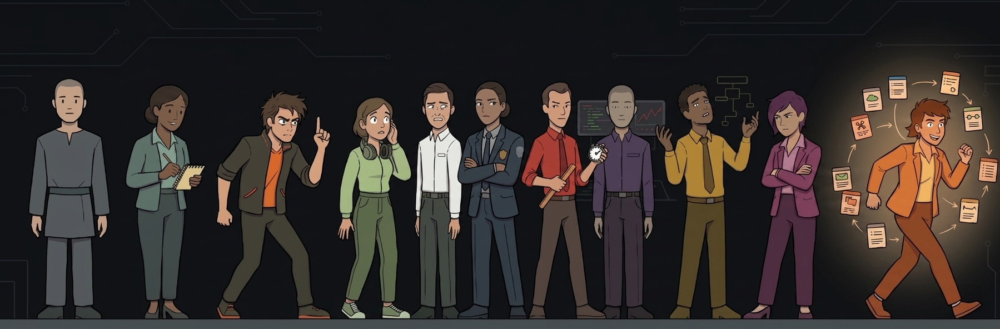

neurodiveragents
15 SPECIALIST AGENTS · NEUROTYPE-FIRST DESIGN
Fifteen specialist AI agents for Claude Code, OpenCode, Cursor, and GitHub Copilot — each grounded in a real cognitive style, not a list of rules.
npx neurodiveragents install
One command installs everything. Detects your tools automatically.
Meet the Agents
Click any agent to expand their profile.
Cognitive Modules
Agents are full specialists you route tasks to. Modules are cognitive fragments — loadable thinking styles you inject into any workflow you already own.
"Same engine, different vehicle. An agent uses its cognitive style for everything it does. A module injects that style into one phase of a larger workflow."
Usage example
Load the `ndv-skeptical` and `ndv-bounded` skills. Apply both
throughout this step.
Install modules
npx neurodiveragents install-skills claude
npx neurodiveragents install-skills opencode --global
Install
One command auto-detects your AI coding assistants and configures all agent prompts. No global state — pure local configuration.
All Tools (Auto-detect)
npx neurodiveragents install
Or install for a specific tool
Claude Code
npx neurodiveragents install claude
Cursor
npx neurodiveragents install cursor
OpenCode
npx neurodiveragents install opencode
GitHub Copilot
npx neurodiveragents install copilot